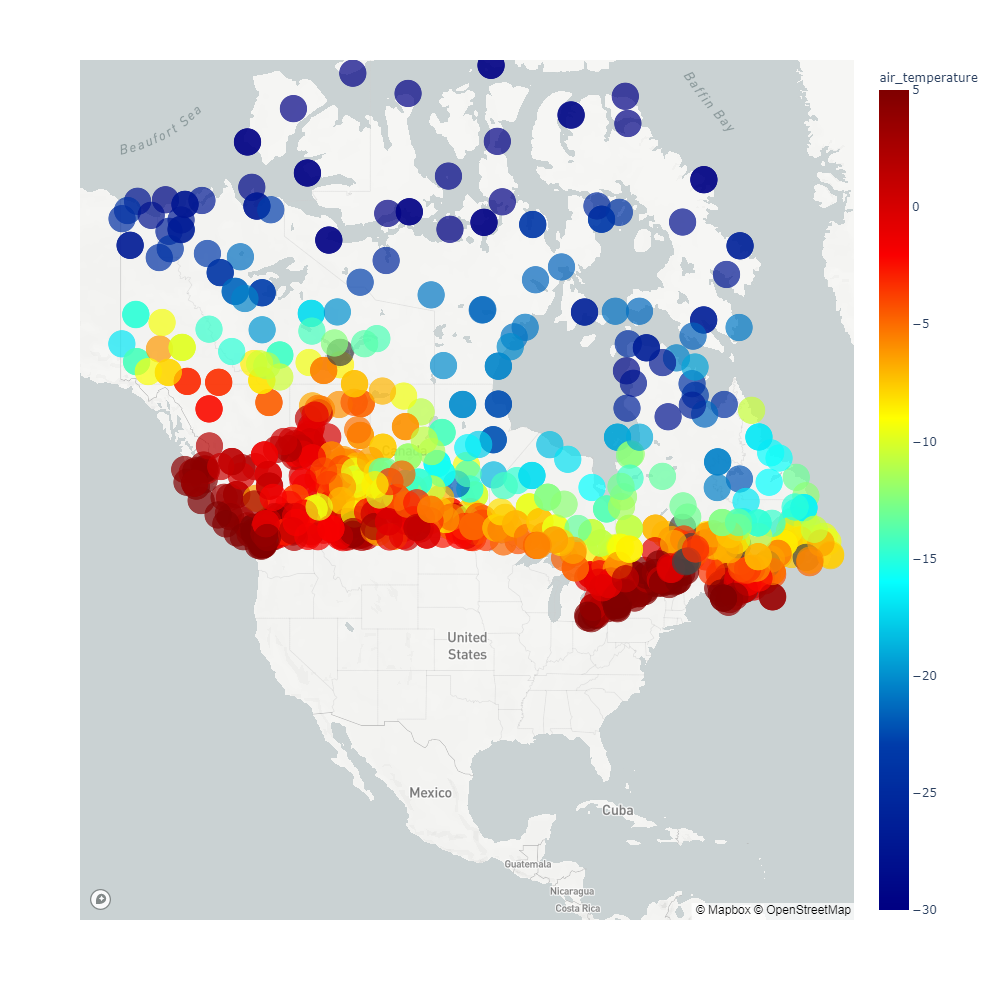
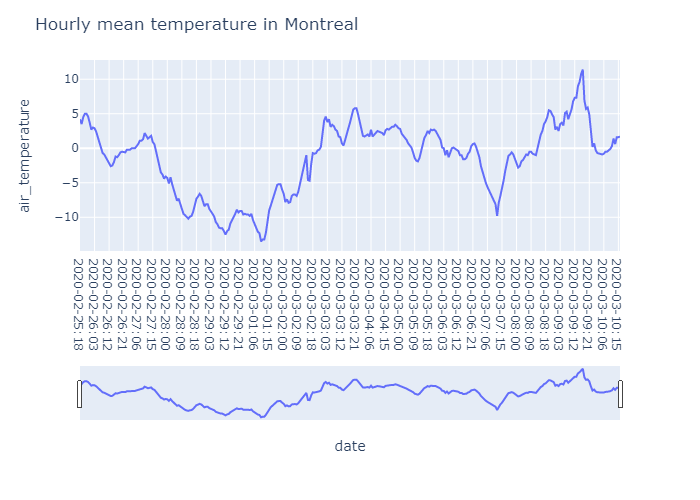

Working with XML climate data

In this tutorial, we will extract Hourly Observation from ECCC and display hourly temperature using plotly library.
We are going to work here with the hourly weather observations data found on the ECCC Datamart.
These observations data are subject to quality control. Any value that does not pass quality control is deleted. This includes values that are categorized as questionable.
For each province or territory, one file for one specific hour contains:
-
The coldest place and temperature in Canada for this hour
-
The hottest location and temperature in Canada for this hour
-
The coldest place and temperature in the province or territory for this hour
-
The hottest location and temperature in the province for territory for this hour
-
The observations and the records of the stations available in this province:
- Present condition (expression)
- Sea level pressure (kPa)
- Value of the pressure trend (kPa)
- Pressure trend (upward, downward, or stable)
- Visibility (km)
- Air temperature (° C)
- Dew point (° C)
- Relative humidity (%)
- Wind speed (km / h)
- Wind direction (code)
- Burst speed (km / h)
- Cloud cover
- Wind Chill
- Humidex
Stations information:
For each station, the following information is available:
- Station name
- Latitude (decimal degree)
- Longitude (decimal degree)
- Transport Canada identification number
- Observation times are in UTC time and local time
- Climate station ID
- WMO station number
There are over 500 observation stations in Canada. However, this number is constantly evolving. The stations are present in the files only if observation data are available.
‘swob-xml_station_list.csv’ document on this link is a list of XML observations available.
Here is a full documentation for XML description of observation point meteorological:
OpenGIS : Standards for observations and measurement.
Frequently Asked Questions from Environment and Change Weather Service Climate Canada Frequently Asked Questions from Environment and Change Weather Service Climate Canada. Miscellaneous information about meteorology and climatology.
Historical climatic data are available on this site.
Synoptic and METAR bulletins can also be found on the MSC HTTP data server.
First, we import python librairies and define the date we want to extract:
from datetime import datetime, timedelta
import pandas as pd
import xml.etree.ElementTree as ET
import wget
import warnings
warnings.filterwarnings("ignore")
import os
from os.path import exists
import requests
import numpy as np
We will work first with all the stations over Quebec (ie file with prefix hourly_qc_):
We will work on this directory.
We want to extreact the latest value recorded.
now = datetime.utcnow() - timedelta(hours=1)
tmp_file = 'http://dd.weather.ec.gc.ca/observations/xml/QC/hourly/hourly_qc_'+now.strftime("%Y%m%d%H")+'_e.xml'
wget.download(tmp_file)
'hourly_qc_2020031017_e (1).xml'
tree = ET.parse('hourly_qc_'+now.strftime("%Y%m%d%H")+'_e.xml')
root=tree.getroot()
children = root.getchildren()
Number of elements in our file:
# total amount of items
print(len(root))
122
To scan the elements of our set, ie the children of our ‘root’:
for child in root.iter('*'):
#print(child)
#print(child.attrib)
#print(child.attrib.get(‘value’))
print(child.attrib.get(‘name’))
Example of station detection:
for child in root.iter('*'):
if child.attrib.get('value') == '7110600':
print(child.tag)
print('station trouvee')
print(child.attrib.get('name') + ': 7110600' )
print(child.items())
print(child.get('value'))
test = tree.find('.//%s/' % child.tag)
{http://dms.ec.gc.ca/schema/point-observation/2.1}element
station trouvee
climate_station_number: 7110600
[('name', 'climate_station_number'), ('uom', 'unitless'), ('value', '7110600')]
7110600
The list of variables is available on this document.
1- Observations extraction:
We will loop over all stations in Quebec and extract some meteorological values.
mslp=[]
air=[]
dew=[]
rel=[]
winds=[]
windd=[]
windc=[]
humidex=[]
stid=[]
present_weather = []
horizontal_visibility = []
station_name = []
latitude = []
longitude = []
for child in root.iter('*'):
if child.attrib.get('name') == 'present_weather':
present_weather.append(child.get('value'))
if child.attrib.get('name') == 'mean_sea_level':
mslp.append(child.get('value'))
if child.attrib.get('name') == 'air_temperature':
air.append(child.get('value'))
if child.attrib.get('name') == 'dew_point':
dew.append(child.get('value'))
if child.attrib.get('name') == 'relative_humidity':
rel.append(child.get('value'))
if child.attrib.get('name') == 'wind_speed':
winds.append(child.get('value'))
if child.attrib.get('name') == 'wind_direction':
windd.append(child.get('value'))
if child.attrib.get('name') == 'wind_chill':
windc.append(child.get('value'))
if child.attrib.get('name') == 'humidex':
humidex.append(child.get('value'))
if child.attrib.get('name') == 'horizontal_visibility':
horizontal_visibility.append(child.get('value'))
if child.attrib.get('name') == 'climate_station_number':
stid.append(child.get('value'))
if child.attrib.get('name') == 'station_name':
station_name.append(child.get('value'))
if child.attrib.get('name') == 'latitude':
latitude.append(child.get('value'))
if child.attrib.get('name') == 'longitude':
longitude.append(child.get('value'))
date = now.strftime("%Y-%m-%d %H:00")
month = now.strftime("%Y%m")
os.makedirs(month, exist_ok=True)
data = {'climate_station_number':stid,
'station_name': station_name,
'latitude': latitude,
'longitude': longitude,
'date':date,
'mean_sea_level':mslp,
'air_temperature':air,
'dew_point':dew,
'relative_humidity': rel,
'wind_speed':winds,
'wind_direction':windd,
'wind_chill':windc,
'humidex':humidex,
'horizontal_visibility':horizontal_visibility }
data= pd.DataFrame(data).set_index("climate_station_number")
If we want to select a specific station:
data[data['station_name']== 'Montréal']
| climate_station_number | station_name | latitude | longitude | date | mean_sea_level | air_temperature | dew_point | relative_humidity | wind_speed | wind_direction | wind_chill | humidex | horizontal_visibility |
|:-------------------------|:---------------|-----------:|------------:|:-----------------|-----------------:|------------------:|------------:|--------------------:|-------------:|:-----------------|:-------------|:----------|:------------------------|
| 702S006 | Montréal | 45.4678 | -73.7417 | 2020-03-10 17:00 | 100.7 | 2.1 | 1.5 | 96 | 10 | NNE | | | |
To save our data by stations:
for index, row in data.iterrows():
file = 'D:/Utilisateurs/guillaume/Documents/GitHub/Python_XML/'+month+'/'+index+'_'+month+'.csv'
if exists(file):
#print ("File exist")
pd.DataFrame(row).T.to_csv(r'D:/Utilisateurs/guillaume/Documents/GitHub/Python_XML/'+month+'/'+index+'_'+month+'.csv',mode='a',index=False,header=False)
else:
#print ("File not exist")
pd.DataFrame(row).T.to_csv(r'D:/Utilisateurs/guillaume/Documents/GitHub/Python_XML/'+month+'/'+index+'_'+month+'.csv',index=False)
We now have everything we need to use Plotly library in order to have interactive scatter plots on maps.
We use the Plotly Express function px.scatter_mapbox to display current temperature observations over Canada.
list_province = ['AB','BC','MB','NB','NL','NS','NT','NU','ON','PE','QC','SK','YT']
dataset = []
for province in list_province:
tmp_file = 'http://dd.weather.ec.gc.ca/observations/xml/'+province+'/hourly/hourly_'+province.lower()+'_'+now.strftime("%Y%m%d%H")+'_e.xml'
r = requests.get(tmp_file)
root = ET.fromstring(r.content)
latitude = []
longitude = []
air=[]
stid=[]
station_name = []
latitude = []
longitude = []
data = []
for child in root.iter('*'):
if child.attrib.get('name') == 'air_temperature':
air.append(child.get('value'))
if child.attrib.get('name') == 'climate_station_number':
stid.append(child.get('value'))
if child.attrib.get('name') == 'station_name':
station_name.append(child.get('value'))
if child.attrib.get('name') == 'latitude':
latitude.append(child.get('value'))
if child.attrib.get('name') == 'longitude':
longitude.append(child.get('value'))
data = {'climate_station_number':stid,
'station_name': station_name,
'latitude': latitude,
'longitude': longitude,
'date':date,
'air_temperature':air }
data = pd.DataFrame(data)
dataset.append(data)
dataset = pd.concat(dataset)
dataset[['latitude', 'longitude']] = dataset[['latitude', 'longitude']].astype(float)
dataset[['air_temperature']] = pd.to_numeric(dataset['air_temperature'].str.replace(' ', '')).astype(float)
dataset['Size']=([0.5] * len(dataset))
We can now create our scatter plot using plotly:
import plotly.express as px
# Create a token in mapbox
token = '**** '
fig = px.scatter_mapbox(dataset,
lat = 'latitude',
lon = 'longitude',
zoom=2.5,
hover_name='date',
range_color=(-30, 5),
size='Size',
color='air_temperature',
color_continuous_scale=px.colors.sequential.Jet,
width = 1000,
height = 1000
)
# Configure the style of the map
fig.update_layout(
mapbox_style="light",
mapbox_accesstoken=token
)

We can push our visualization to our plotly account using the following lines of code:
import chart_studio
username = 'username'
api_key = '******'
chart_studio.tools.set_credentials_file(username = username, api_key = api_key)
import chart_studio.plotly as py
py.plot(fig, filename = 'scatter_plot', auto_open = True)
If done correctly, this code should open a new window with your visualization on your account and return the link in your notebook.
'https://plot.ly/~guimeteo/19/'
Now we have the link to our plotly visualization (either hosted on plotly or github pages).
2- Plot timeserie for one station:
from datetime import datetime
end_date = datetime.utcnow() - timedelta(hours=1)
start_date = datetime.utcnow() - timedelta(days=14)
mydate = start_date
while mydate < end_date:
#print((mydate).strftime("%Y-%m-%d %H:00"))
mydate += timedelta(hours=1)
from datetime import datetime
end_date = datetime.utcnow() - timedelta(hours=1)
start_date = datetime.utcnow() - timedelta(days=14)
mydate = start_date
dataset = []
while mydate < end_date:
#print((mydate).strftime("%Y-%m-%d %H:00"))
tmp_file = 'http://dd.weather.ec.gc.ca/observations/xml/QC/hourly/hourly_qc_'+mydate.strftime("%Y%m%d%H")+'_e.xml'
r = requests.get(tmp_file)
root = ET.fromstring(r.content)
air=[]
stid=[]
latitude = []
longitude = []
data = []
station = []
for child in root.iter('*'):
if child.attrib.get('name') == 'air_temperature':
air.append(child.get('value'))
if child.attrib.get('name') == 'climate_station_number':
stid.append(child.get('value'))
if child.attrib.get('name') == 'latitude':
latitude.append(child.get('value'))
if child.attrib.get('name') == 'longitude':
longitude.append(child.get('value'))
if child.attrib.get('name') == 'station_name':
station.append(child.get('value'))
date = now.strftime("%Y-%m-%d %H:00")
month = now.strftime("%Y%m")
data = {'climate_station_number':stid,
'latitude': latitude,
'longitude': longitude,
'date':mydate.strftime("%Y-%m-%d:%H"),
'air_temperature':air,
'name station': station}
mydate += timedelta(hours=1)
data = pd.DataFrame(data)
dataset.append(data)
dataset = pd.concat(dataset)
dataset.head()
| | climate_station_number | latitude | longitude | date | air_temperature | name station |
|---:|:-------------------------|-----------:|------------:|:--------------|------------------:|:--------------------|
| 0 | 7100071 | 60.8186 | -78.1486 | 2020-02-25:18 | -29.9 | Akulivik Airport |
| 1 | 7110600 | 59.2967 | -69.5997 | 2020-02-25:18 | -26.6 | Aupaluk Airport |
| 2 | 704S001 | 49.2592 | -68.1458 | 2020-02-25:18 | 0.6 | Baie-Comeau |
| 3 | 7040444 | 49.1325 | -68.2044 | 2020-02-25:18 | 2.1 | Baie-Comeau Airport |
| 4 | 7040442 | 49.1333 | -68.2 | 2020-02-25:18 | 1.7 | Baie-Comeau Climate |
We will plot daily timeserie for station with climate_station_number = ‘702S006’
dataset1 = dataset[dataset['climate_station_number']=='702S006']
dataset1.head()
| | climate_station_number | latitude | longitude | date | air_temperature | name station |
|---:|:-------------------------|-----------:|------------:|:--------------|------------------:|:---------------|
| 64 | 702S006 | 45.4678 | -73.7417 | 2020-02-25:18 | 4.2 | Montréal |
| 66 | 702S006 | 45.4678 | -73.7417 | 2020-02-25:19 | 3.5 | Montréal |
| 65 | 702S006 | 45.4678 | -73.7417 | 2020-02-25:20 | 4.5 | Montréal |
| 65 | 702S006 | 45.4678 | -73.7417 | 2020-02-25:21 | 5 | Montréal |
| 65 | 702S006 | 45.4678 | -73.7417 | 2020-02-25:22 | 5 | Montréal |
import datetime
fig = px.line(dataset1, x='date', y='air_temperature')
fig.update_layout(title_text='Hourly mean temperature in Montreal',
xaxis_rangeslider_visible=True)
fig.show()
import plotly.io as pio
pio.write_html(fig, file = 'timeserie.html', auto_open = True)
fig.write_image("timeserie.png")

Follow this link for interactive plot.
Guillaume Dueymes
Data Scientist and Research Assistant
My research interests include data science, data management and climate science.